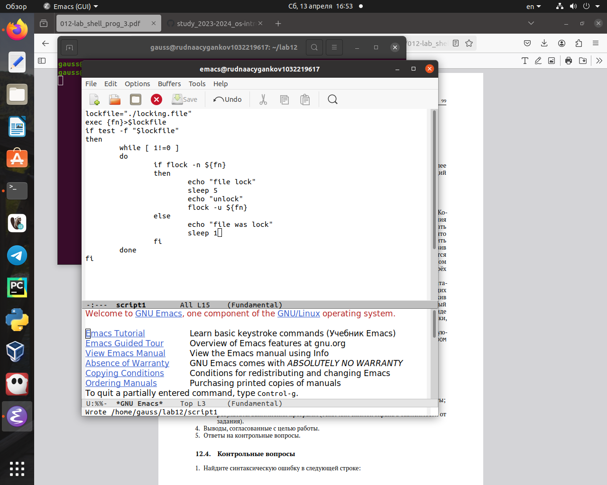
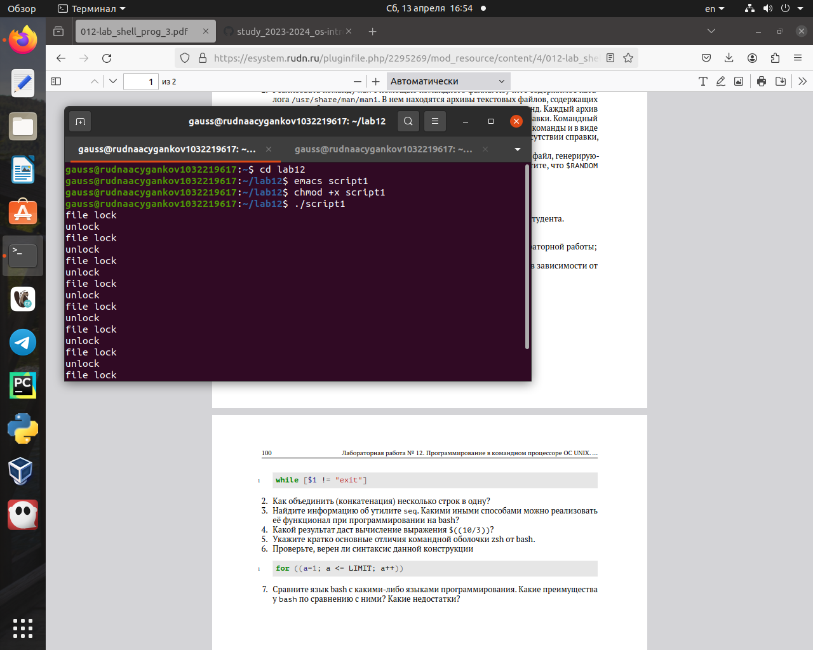
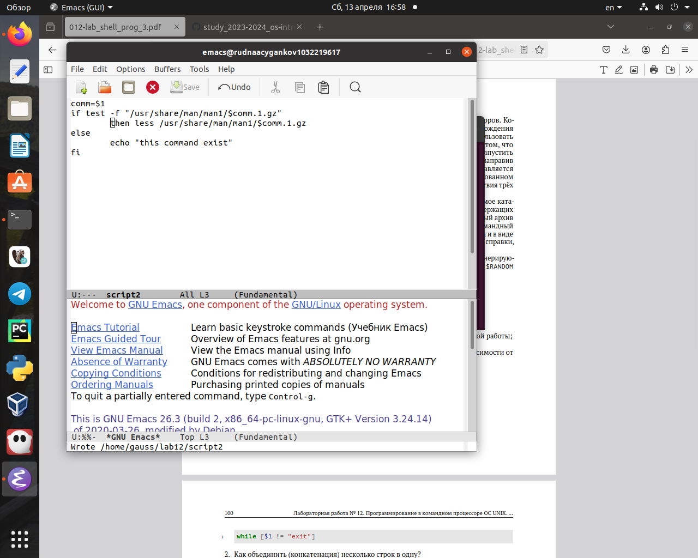
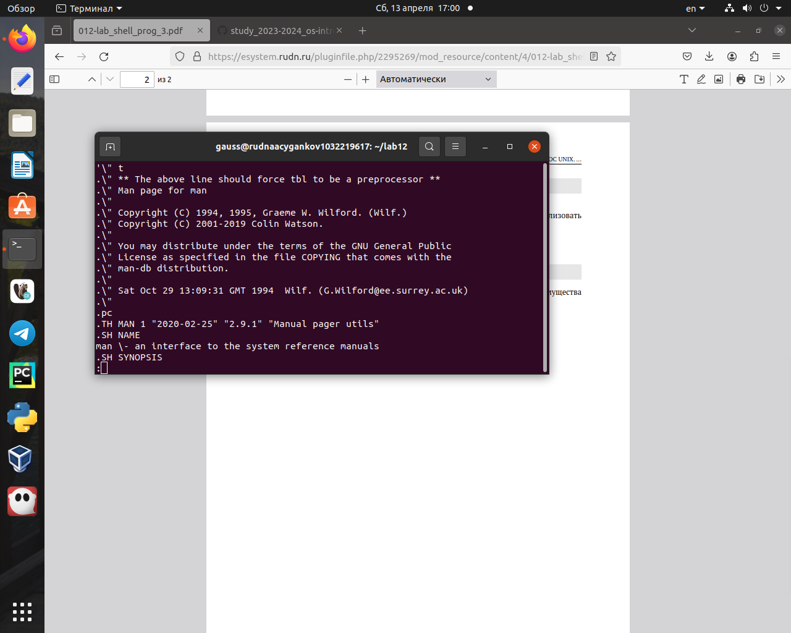
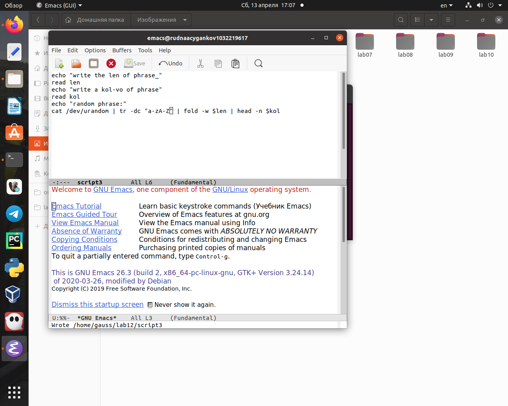
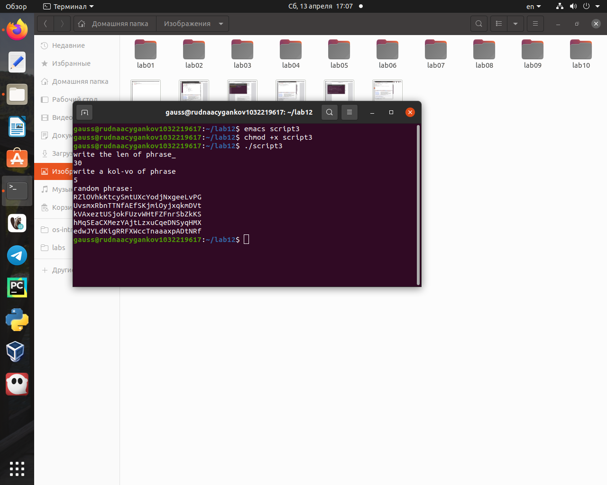

Навык написания сложных скриптов сильно упрощает работу с операционной системой и позволяет быстрее выполнять задачи.
Объект и предмет исследования
Командный процессор ОС UNIX
Цели и задачи
Цель данной лабораторной работы - изучить основы программирования в оболочке ОС UNIX. Научиться писать более сложные командные файлы с использованием логических управляющих конструкций и циклов.
Выполнение заданий.
Написать командный файл, реализующий упрощённый механизм семафоров. Командный файл должен в течение некоторого времени t1 дожидаться освобождения ресурса, выдавая об этом сообщение, а дождавшись его освобождения, использовать его в течение некоторого времени t2<>t1, также выдавая информацию о том, что ресурс используется соответствующим командным файлом (процессом). Запустить командный файл в одном виртуальном терминале в фоновом режиме, перенаправив его вывод в другой (>/dev/tty#, где # - номер терминала куда перенаправляется вывод), в котором также запущен этот файл, но не фоновом, а в привилегированном режиме. Доработать программу так, чтобы имелась возможность взаимодействия трёх и более процессов (рис. @fig:001, @fig:002)
script1
Результат
Реализовать команду man с помощью командного файла. Изучите содержимое каталога /usr/share/man/man1. В нем находятся архивы текстовых файлов, содержащих справку по большинству установленных в системе программ и команд. Каждый архив можно открыть командой less сразу же просмотрев содержимое справки. Командный файл должен получать в виде аргумента командной строки название команды и в виде результата выдавать справку об этой команде или сообщение об отсутствии справки, если соответствующего файла нет в каталоге man1 (рис. @fig:003, @fig:004)
script2
Результат по команде man
Используя встроенную переменную $RANDOM, напишите командный файл, генерирующий случайную последовательность букв латинского алфавита. Учтите, что $RANDOM выдаёт псевдослучайные числа в диапазоне от 0 до 32767 (рис. @fig:005, @fig:006)
script3
Результат
Результаты
Вывод:
В ходе выполнения данной лабораторной работы я изучил расширенное программирование в оболочке ОС UNIX, научился писать более сложные командные файлы с использованием логических управляющих конструкций.